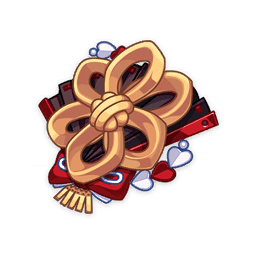
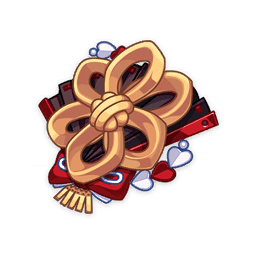

Персонаж, экипированный этим набором артефактов, получает эффект Любопытства в следующих ситуациях:
1 уровень Любопытства даётся активному персонажу после попадания по противнику атакой Гео (не чаше чем раз в 0,3 сек.); когда персонаж находится вне поле боя, он получает 1 ур. Любопытства каждые 3 сек.
Любопытство может складываться до 4 ур., каждый ур. прибавляет 6% к защите и 6% к Гео урону. Если персонаж не получает Любопытство в течение 6 сек., то он теряет 1 накопленный уровень Любопытства.
© 2022. «Cognosphere». Все права защищены